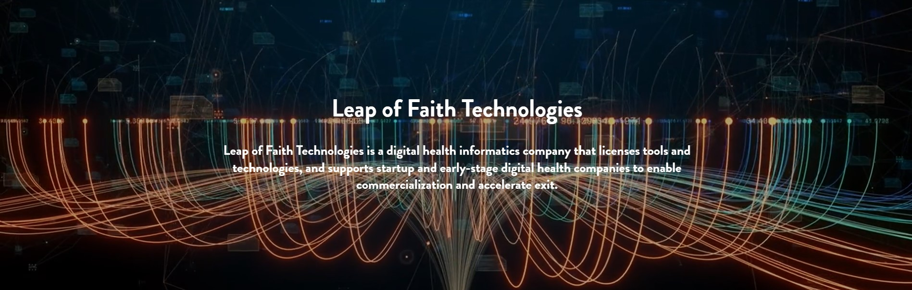

Pranjali Deshmukh
Master's in Computer Science | Full Stack Developer
I'm currently pursuing my Master's in Computer Science at Illinois Institute of Technology (Graduating Dec 2024). With experience in full-stack development, healthcare tech, AI/ML, and data engineering, I'm focused on leveraging technology to create real-world impact. My goal is to build a business that incorporates innovation into legacy systems.
Professional Experience

Project 4: Engineered an AI-powered ATS.
- Engineered an AI-powered Applicant Tracking System (ATS) using React, OpenAI, and RAG architecture, automating parsing, fraud
detection, and scoring of 900+ resumes with specific role-based rules; reduced manual screening time by 70%.
Project 3: Developed a data ETL Pipeline using OMOP CDM
- Acted as Product Owner for an OMOP-based (R scripts) data pipeline project, overseeing sprint planning and task prioritization for
ETL extraction of Synthea datasets(10K records) focused on oncology cohort analysis; delivering the initial release on schedule.
- Queried SQL data models and migrated application data to PostgreSQL, enabling live status tracking and Excel reporting — improved
pipeline visibility and reduced data errors by 60%. Led architectural decisions and coded APIs to be consumed by the front-end.
Project 2: Scripted LLM-based algorithm to analyze clinical notes
- Scripted LLM-based algorithm to analyze clinical notes, extracting data for MIPS measures with cost efficiency under
$0.045 per note. Designed an interface using Flask to showcase the algorithm’s execution for the MIPS reporter.
- Automated entity mapping using IMO NLP on 10K emergency department notes, stored in GCP BigQuery, to build ETL pipelines for
LLMs. Executed unit and performance testing for MIPS scoring, prompt reliability, and optimized CI/CD pipelines.
Project 1: Developed a Flutter mobile application
- Developed a Flutter mobile application and integrated it with a Django-based Care-Compliance dashboard for diagnosis.
- Implemented Python microservice for medication alerts, eDiary scheduling, and clinical questionnaires by integrating FHIR (HL7)
APIs with EPIC (EMR/EHR); mapped medication data using ICD-10 and SNOMED codes, ensuring HIPAA-compliance.
Leadership:
- Led 5+ developers across sprints, ensuring timely delivery through cross-functional collaboration using Monday.com.
- Represented Leap of Faith at HIMSS 2025, pitching the business model to healthcare technology stakeholders; forged 5+ strategic
business partnerships through targeted outreach and relationship-building with key decision-makers.
"
data-popupimage="images/thumbs/lof-thumb1.jpg"
data-github="https://www.linkedin.com/in/pranjalideshmukh/recent-activity/all/" />
Leap Of Faith Technologies
Chicago, IL | January 2024 - Present
Software Developer
- Designed a Power BI dashboard to track KPIs like team incorporation, funding, and revenue growth, boosting data-driven decisions and
employee engagement by 43%. Built scalable data pipelines with Databricks and Data Lakes, integrating multiple data sources.
- Managed and analysed student and startup data using advanced Excel functions (VLOOKUP, pivot tables, conditional formatting),
improving mentor oversight and reducing data review time by 50%.
- Collaborated with stakeholders to drive strategic problem-solving and led business planning for 10 startups, enhancing scalability.
"
data-popupimage="images/thumbs/INE.jpg"
data-github="https://www.linkedin.com/posts/pranjalideshmukh_aiinhealthcare-llm-leapoffaith-activity-7237684975557341185-Uto3?utm_source=share&utm_medium=member_desktop&rcm=ACoAACr57wABtgPzEZQKBzteQOyuBHX_g-pDJn0" />
Volunteering
Training and Placement (TNP) Coordinator: At Zeal College of Engineering and Research, I served as a Training and Placement Coordinator, where I organized and managed recruitment drives, career fairs, and employer engagement initiatives. I facilitated coding assessments, technical workshops, and job preparation sessions, helping students build industry-ready skills. Additionally, I maintained detailed placement records and collaborated closely with company representatives to ensure smooth execution of the placement process, supporting over 300+ students in their career journeys.
Innovation & Entrepreneurship Club Member: As an active organizer of Illinois Tech's Innovation & Entrepreneurship Club, I contributed to cultivating a startup and innovation mindset among students. I helped organize ideation competitions, workshops on entrepreneurship fundamentals, and startup showcases, encouraging students to think creatively and pursue new ventures. Through collaborative initiatives, I promoted cross-disciplinary teamwork and supported the growth of student-led innovations within the campus ecosystem.
Hobbies
Drawing & Artistic Expression: Art, for me, is a lens through which I perceive the world. I find inspiration in the subtle hues of a sunset, the intricate patterns of leaves, and the serene flow of water. Capturing these moments through drawing and pictures allows me to connect deeply with nature's poetry. As Elbert Hubbard once said, "Art is not a thing; it is a way." This philosophy resonates with my approach to art, where each sketch is a reflection of the beauty that surrounds us.
Check out my Website : See Through My Eyes
Creative Pursuits & Leisure Activities: Beyond the canvas, my creativity extends to designing websites, crafting personalized birthday cards, and producing heartfelt videos that celebrate life's special moments. Cooking is another avenue where I explore cultural flavors, experimenting with diverse cuisines to create delightful dishes. In my leisure time, I enjoy strumming the guitar, letting melodies express emotions words cannot, and engaging in a spirited game of badminton, which keeps me energized and grounded. These activities not only enrich my life but also fuel my creative spirit.